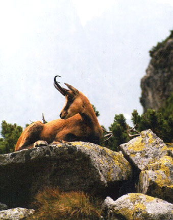
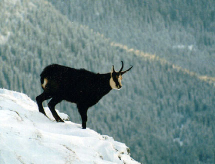
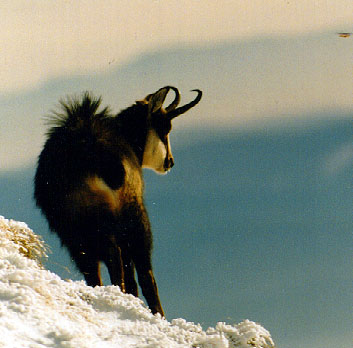
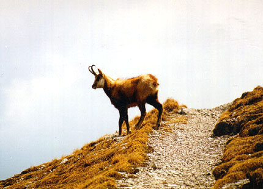
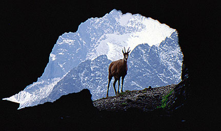

|
 Kozica tatrzańska jest endemitem - Tatry to jedyne
miejsce, gdzie występuje. Spotkać ją można
na całym obszarze Tatr, w piętrze hal i turni,
liczniejsza jest w niemal
zamkniętych dla ruchu turystycznego Tatrach Bielskich.
Różnice pomiędzy wyglądem samca i samicy (dymorfizm płciowy)
nie są wyraźne; obie płcie mają czarne rogi, haczykowato zagięte w tył.
Sierść jest zimą czarna, a latem ruda; dzięki temu zwierzęta są
mniej widoczne na tle otoczenia. Dorosła kozica ma 75-85 cm długości,
70-90 cm wzrostu, waży 24-36 kg. Ruja ma miejsce w listopadzie i grudniu,
młode (jedno) rodzi się w maju lub czerwcu. Żyją średnio 15 lat. Kozice
dzięki budowie racic bardzo sprawnie poruszają się po stromych skałach.
Łączą się w niewielkie stada. Ich naturalnymi wrogami są drapieżniki:
orły, rysie i wilki.
Kozica tatrzańska jest endemitem - Tatry to jedyne
miejsce, gdzie występuje. Spotkać ją można
na całym obszarze Tatr, w piętrze hal i turni,
liczniejsza jest w niemal
zamkniętych dla ruchu turystycznego Tatrach Bielskich.
Różnice pomiędzy wyglądem samca i samicy (dymorfizm płciowy)
nie są wyraźne; obie płcie mają czarne rogi, haczykowato zagięte w tył.
Sierść jest zimą czarna, a latem ruda; dzięki temu zwierzęta są
mniej widoczne na tle otoczenia. Dorosła kozica ma 75-85 cm długości,
70-90 cm wzrostu, waży 24-36 kg. Ruja ma miejsce w listopadzie i grudniu,
młode (jedno) rodzi się w maju lub czerwcu. Żyją średnio 15 lat. Kozice
dzięki budowie racic bardzo sprawnie poruszają się po stromych skałach.
Łączą się w niewielkie stada. Ich naturalnymi wrogami są drapieżniki:
orły, rysie i wilki.
Wbrew nazwie, kozica nie jest krewniaczką kozy, ale jedynym europeskim
gatunkiem antylopy. Inne gatunki kozic żyją w Alpach i innych wysokich
górach naszego kontynentu.
Kozica jest gatunkiem zagrożonym wyginięciem. Ich liczba jest
nipokojąco mała i wciąż spada. W 2000 roku było ich
(po obu stronach granicy) 288 sztuk, w 2001 - 228 sztuk.
W 2002 roku pierwszy raz zaobserwowano tendencję wzrostową: naliczono
300 kozic. Ważną przyczyną wymierania tych zwierząt jest zakłócanie ich
spokoju przez ludzi.




Kozica na jednym ze szlaków turystycznych

Zimą kozice szukają schronienia w Capiej Dziurze (Kamzica Jaskynia)
Ratujmy kozicę tatrzańską
|